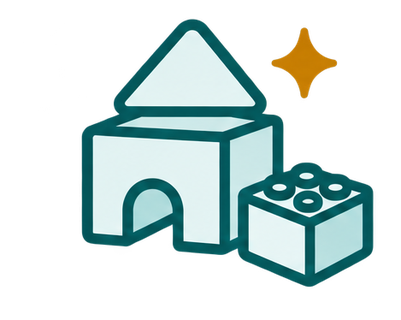
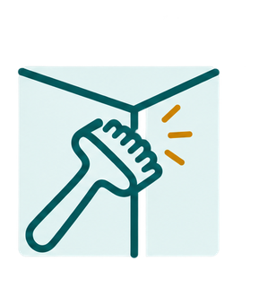
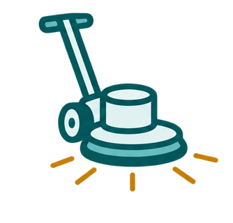
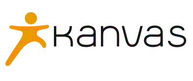
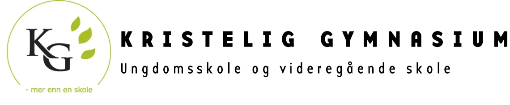

Renhold i Oslo og Stavanger
Spesialister på barnehagerenhold, med skoler, bilforhandlere og kontorer i tillegg. Direkte ansatte – ingen underleverandører.
Tjenester
Renhold tilpasset stedet du driver
I Clean Unit er fokuset på kvalitet. For oss betyr det at vi i tillegg til å vaske rent, strekker oss langt for å imøtekomme våre kunders ønsker og behov. For oss handler kvalitet om service i alle ledd, og vi er fleksible og kan skreddersy et renhold som passer din bedrift.
-

Barnehagerenhold
Clean Unit er spesialisten på rengjøring av barnehager. Vi vet hvilke krav som stilles til hygiene, innemiljø og smittevern, da om lag 90 prosent av våre oppdrag utføres hos barnehager.
-
Daglig renhold
Renhold er viktig for helsen og trivselen til de ansatte på alle arbeidsplasser. Ti års erfaring fra renhold i barnehager har gitt Clean Unit gode rutiner for å holde det rent.
-

Hovedrengjøring
Hovedrengjøring er en viktig del av det totale renholdet for mange bedrifter. Dette innbefatter grundig rengjøring av vegger, tak, lister, skap og annet som avtales.
-
Hygieneartikler
Clean Unit kan levere de fleste merker innen hygieneartikler og dispensere. Vi både bestiller varene og etterfyller dispenserne hos flere av våre kunder.
-

Gulvbehandling
Det finnes mange ulike gulv og belegg. Vi har kompetanse til å finne riktig renhold og vedlikehold for både tepper og harde gulv.
-
Vinduspuss
Clean Unit kan utføre de fleste oppdrag innen vinduspuss, både utvendig og innvendig.
Referanser
Dette sier kundene våre
-
Vi opplever svært god kundeservice, en blid og hyggelig renholdsarbeider/assistent, fleksibilitet og oppfølging.
-

Vi har tett dialog og opplever at Clean Unit Renhold følger opp tilbakemeldinger og har fokus på kvalitet.
-

I en hektisk hverdag setter vi ekstra pris på at renholderne alltid er blide og selv proaktivt oppsøker informasjon.
-
Vi opplever Clean Unit som meget profesjonelle med kvalitet og service i fokus.
-
Vi er veldig fornøyde med samarbeidet, kommunikasjonen samt rengjøringen av våre lokaler.
Hvorfor Clean Unit
Godkjent, ansvarlig og til stede
-
Direkte ansatte
Vi bruker ikke underleverandører. Dere vet alltid hvem som utfører renholdet hos dere.
-
Miljøfyrtårn-sertifisert
Vi er en offentlig godkjent renholdsbedrift og miljøfyrtårnsertifisert.
-
Medlem i Virke
Som medlem i hovedorganisasjonen Virke overholder vi eksisterende krav og reglement.
-
Jevnlig re-sertifisert
Vi fornyer sertifiseringene våre jevnlig for å holde standarden oppe.
Om oss
To kontorer, samme standard
Clean Unit er en servicebedrift som utfører de fleste former for renhold, gulvbehandlinger og levering av hygieneartikler til bedriftsmarkedet. Kontoret i Nydalen, Oslo har i dag 55 ansatte, og vi har i tillegg et eget kontor i Stavanger. Hos oss er kunden i fokus — vi tilpasser oss kundens behov for å finne den løsningen som passer best for akkurat deres bedrift. Clean Unit er en bedrift i vekst, for stadig flere oppdager verdien av en kvalitetsfokusert renholdsleverandør.
Fra to mopper til 55 ansatte
Vi startet Clean Unit i 2007 fordi vi så et marked som var modent for en renholdsbedrift som ville levere topp service i alle ledd. Den gangen var vi to stykker med hver vår mopp, og en felles idé om å lage landets beste servicebedrift. Vi er ikke størst, men vi jobber knallhardt for å være best — for oss er ikke renhold et nødvendig onde, det er levebrødet vårt, og det tar vi på alvor. Derfor er det viktig at alle ansatte får skikkelig opplæring, og at de deler vår visjon om å levere den beste servicen. Resultatet vi leverer, er vår garanti for å beholde dere som kunde.
Jobb hos oss
Renholderne er de viktigste
Hos Clean Unit er det renholderne som gjør jobben — ikke bare en del av firmaet. Vi gir alle ansatte skikkelig opplæring, følger opp med trening og ergonomi i hverdagen, og mange av våre ansatte blir hos oss i mange år.
-
Skikkelig opplæring
Alle får opplæring før de begynner å jobbe, og vi oppfordrer til å spørre om hjelp hvis man er usikker på noe.
-
Trening og ergonomi
Vi har fokus på riktige teknikker i jobben, og en bedriftsavtale med SATS/ELIXIA gir alle ansatte tilbud om trening til redusert pris.
-
Godt arbeidsmiljø
Vi jobber stadig med hvordan vi kan bli bedre, og samholdet mellom renholderne og de på kontoret er viktig for oss.
-
Langvarige kollegaer
Flere av våre ansatte har jobbet hos oss i mange år — noen helt siden 2013.
Dette sier de som jobber hos oss
-
Mitt eventyr med Clean Unit begynte for 9 år siden. Jeg har lært mye i løpet av denne tiden. Godt miljø, en sjef som sørger om ansatte, følelse av sikkerhet og treningsmuligheter – dette er mest viktig for meg. Clean Unit har lært meg hvor viktig og ekstremt nødvendig denne jobben er.
-
Jeg har jobbet i Clean Unit i mange år, men hadde et par års pause når jeg fikk barn. I Clean Unit blir vi oppdatert på metoder, ergonomi og hva som er viktig for at vi skal vaske rent, og for at vi skal ha det bra. Samholdet er viktig blant de som vasker, og med de på kontoret, så derfor ville jeg tilbake til Clean Unit når jeg skulle jobbe igjen.
-
Vår tjeneste er kunnskapsbasert og utvikler medarbeidernes kompetanse. Clean Unit er innovative og søker gode løsninger for oss medarbeidere og våre kunder. Vi vet hva vi vil og hva som skal til. Clean Unit utstråler energi og arbeidsglede.
-
Jeg har jobbet i Clean Unit siden 2013. Dette er det første stedet jeg jobber hvor jeg føler at renholderne er de viktigste, og ikke bare en del av firma. Vi blir motivert til å gjøre en så god jobb som mulig, og alle får opplæring før de begynner å jobbe.